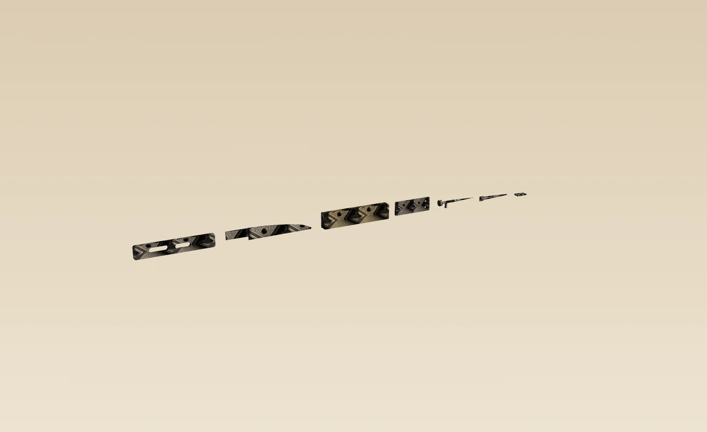

Proposed instrument · the solids are the page
The kit, as CadQuery built it.
Every object on this page is a production-intent B-rep: STEP AP214 for Luke, DXF at 1:1 mm for EDM talk, STL only so you can turn the same geometry. The earlier stills were finish studies. This is the engineering.
Collaboration proposed with Zen-Wu Toolworks. Not an announced product, not a quote, not a claim that Luke Lyu has accepted the work. Drag the studio. The hammered map is the TOGI plate.
01 · Solids
Pick a part. Orbit the STEP.
Washi ground. Charcoal titanium. Brushed edge steel. The TOGI hammered map sits on every metal face — the same finish language as the plate, not a new material for each object.
Loading the frame…
Seated solid
94 × 16.2 × 4.6
Ti-6Al-4V monocoque. Rinse slots, kusabi pocket, Ø4.40 eye.
Download 01-frame.step Download 01-frame.stl Transmittal BOM.csv parameters.jsonMaster is STEP. STL is the tessellation you are orbiting. Kusabi contract: tang 28.00 × 10.00 × 2.00 mm, slot +0.12 / +0.10 / +0.20.
02 · Geometry
The blade you seated, as a solid.
Angles are proposed working targets for conversation and CAD — not hardness tickets. The mesh is the same STEP as the zip.
- Module
- MIZU-82
- Zone
- Belly 22–70 mm
- Presentation / reverse
- 12° / 14°
- Behind-edge thickness
- 0.10–0.13 mm
- Job
- Skin release and pinbone tracing.
MIZU finish target: 800–1000 diamond, 1 μm deburr. KUMIKO stays a 15° flat on a dead-flat ura. NATA stays 24° and refuses batoning.
03 · Seat
Seat the kusabi. The studio follows.
One frame. One blade. Accessories you can name. The row below is the same solids as the zip, laid out from the loadout. Masses are a geometric model, not weighings.
Named starting loadouts. Edit after seating.
Right-hand default
Line items
| Module | Target |
|---|
What this loadout will and will not do
04 · Proof
What is already true, and what is still a drawing.
Zen-Wu, as published
Zen-Wu (参物) is a Wuhan toolworks of about seventeen people, with fewer than ten EDM machines and fewer than ten large CNCs. Luke L. is listed as Master of eye. zenwutoolworks.com/pages/about · retrieved 15 Aug 2026
The Shirabiki-style marking knife is titanium-alloy with a dovetail-laminated Magnacut edge, described as about the weight of a pencil. Dictum lists 165 mm, 40 g, 62–63 HRC. Marking knife · Dictum 745313
Travel knives: flat backs and flat bevels for whittling, chamfering, kumiko, shop and trail. Japanese-style plane blades are urade-fuyo — no hollow — because the factory back is already flat. Travel knives · Planes
Steel we will not over-claim
MagnaMax is described by its developer as raising wear resistance over MagnaCut with similar corrosion behavior in a 1% saltwater test. That is Knife Steel Nerds language, not a SHINOBI field result. Knife Steel Nerds, 19 Jan 2026
Cold Steel publishes the Bird & Game at 3.5 in / 1.4 oz, AUS-8A, polymer. It is the mass benchmark — and the construction this kit refuses. coldsteel.com/bird-game
No testimonials. No weighed samples. No accepted purchase order. Graphene remains declined as a specified coating. The page no longer leads with generated photographs of a different massing.
05 · Invitation
Compose a studio brief.
The brief is built on this device from the loadout you seated. This site has no inbox. It will not display a false “message sent.”
If the intended reader is Luke at Zen-Wu, start from zenwutoolworks.com. Type a recipient yourself. Attach the review zip — STEP solids, DXF profiles, transmittal, BOM. Do not send the website STL as if it were the master.